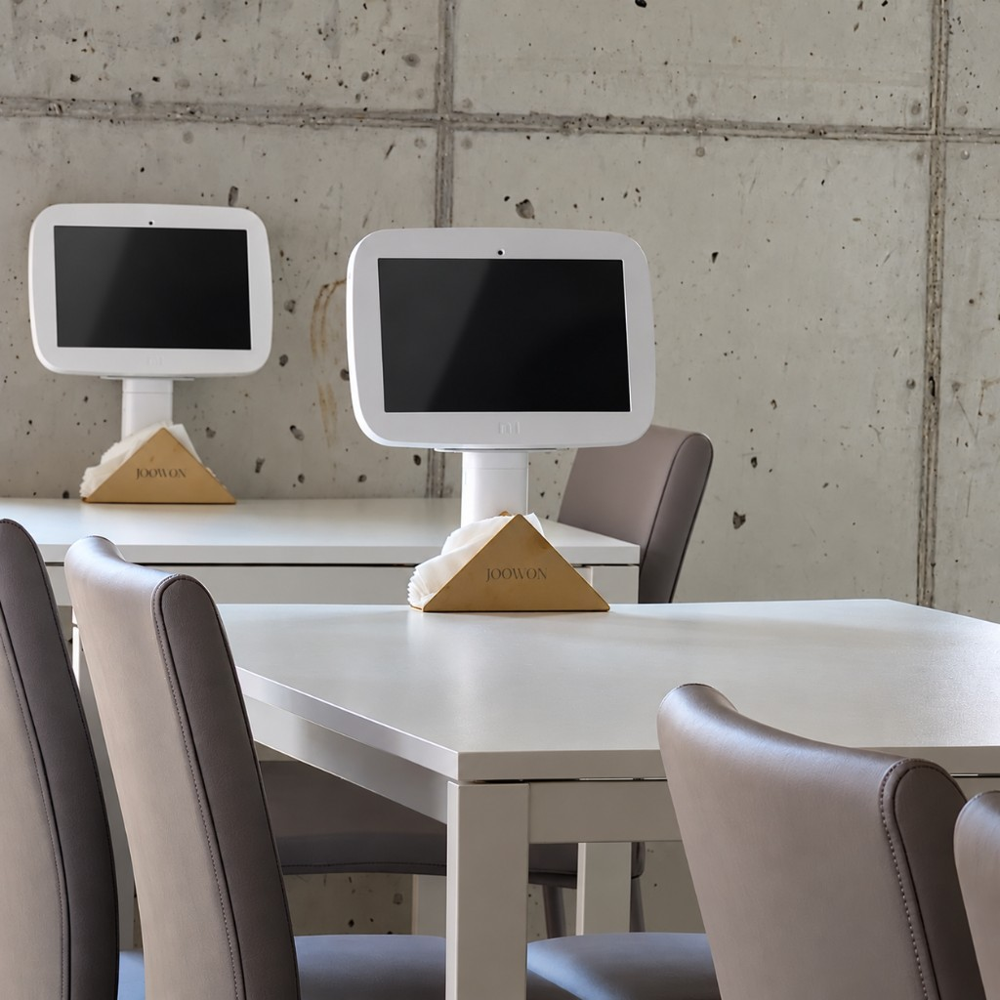

Provoz
Hardware do gastro provozu
Tablety do restaurace
Tableflow dodává tablety určené ke stolu — ne běžný spotřební tablet na stojánku. Součástí je uchycení, výměnná baterie a nabíjecí stanice. Hosté objednávají přímo u stolu, objednávky se předají do propojené pokladny.

Co dostanete ke stolu
-
Tablet s pevným uchycením
Zařízení drží u stolu, host ho používá na místě a neodnáší si ho s sebou.
-
Výměnná baterie
Provoz nečeká na dlouhé nabíjení u stolu — baterii vyměníte a tablet jede dál.
-
Nabíjecí stanice
Dok na pozadí drží nabité baterie připravené na směnu.
Proč tablety místo QR na telefonu hosta
Objednávka
Od prohlížení menu k odeslání
Na tabletu host objednávku nejen vidí — může ji rovnou odeslat do pokladny.Náklady
Pronájem místo nákupu
Měsíční poplatek podle počtu stolů, instalaci domluvíme předem.Tablety, které patří do restaurace
Hardware pochází od zkušeného technologického výrobce z Jižní Koreje a je připravený na každodenní provoz. Bílé i černé provedení. Software Tableflow běží na tabletu a předává objednávky do pokladny.
- Uchycení ke stolu + výměnná baterie + dok
- Objednávkový systém, ne jen digitální jídelníček
- Instalace obvykle během půl dne

Časté otázky k tabletům
Jaké tablety do restaurace Tableflow nabízí?
Specializovaný hardware určený do gastro provozu: tablet, pevné uchycení ke stolu, výměnná baterie a nabíjecí stanice. Zařízení se pronajímá.
Musíme tablety kupovat?
Ne. Nabízíme pronájem s jednorázovou instalací a měsíčním poplatkem podle počtu stolů.
Jak dlouho trvá instalace?
Záleží na počtu stolů a přípravě provozovny. Instalace obvykle probíhá během půl dne.

Chcete tablety Tableflow ve své restauraci?
Napište na info@tableflow.cz nebo vyplňte formulář. Přijedeme, ukážeme hardware i objednávání a projdeme počet stolů.